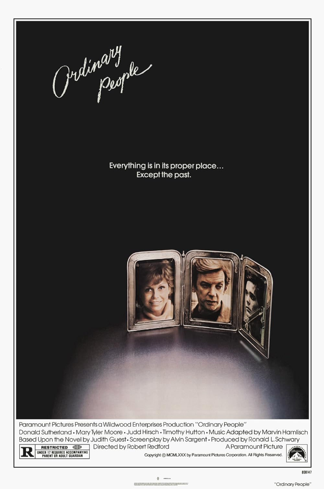

Ordinary People
53rd Academy Awards
(Oscars 1981)
6 Nominations, 4 Awards
| Watched |
| Nominations | ||
|---|---|---|
| Category | Nominees | Result |
| Best Picture | Ronald L. Schwary | Won |
| Actress in a Leading Role | Mary Tyler Moore | Nominated |
| Actor in a Supporting Role | Judd Hirsch | Nominated |
| Actor in a Supporting Role | Timothy Hutton | Won |
| Directing | Robert Redford | Won |
| Writing (Screenplay Based on Material from Another Medium) | Alvin Sargent | Won |